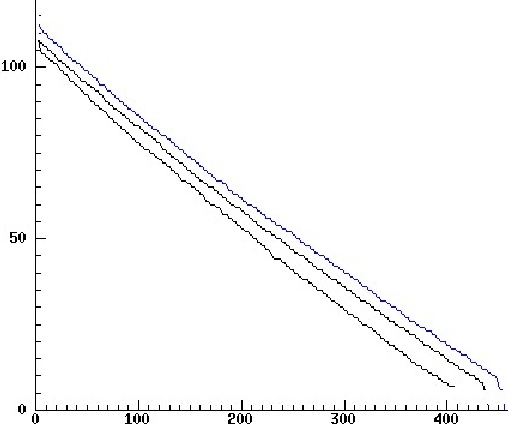

cat /proc/acpi/battery/BAT0/info
On 1st July I reported to Dell Support that the Simplo battery appeared to have a fault insofar as its performance was significantly different from the Samsung's. If the charger was connected when the battery was not fully charged it did not always start recharging: the charge level had to drop to around 95% before recharging was possible. It also did not last as long without AC power as the Samsung battery.
The Simplo battery was replaced on 14th July: another Simplo battery was delivered and the old one collected
Unfortunately, testing showed that the replacement battery had the same charging fault as the original (and that it was also made by Simplo).
I charged the battery fully and found that it could keep the E6410 going for 6 hours 18 minutes while running with a very low CPU load, screen brightness on minimum, and wireless on but not used much, before the charge level dropped to about 7% with the warning light flashing. In contrast the Samsung lasted 7 hours 34 minutes before dropping to 7%.
I reported the charging fault and the discrepancy in capacity. I was then promised another replacement, which was to be a Dell Battery made by Samsung. A new battery was delivered on 22nd July, but turned out to be another Simplo, with the same charging fault as before, i.e. not recharging if the charge level had dropped only a few percent from full charge when the charger was connected. So I reported this. However when I tested its endurance I found it better than the previous Simplo, though not as good as the Samsung (as shown on the graph below).
I was then promised yet another replacement, which was at first going to be another Samsung-made battery. However, for some reason they decided to send me a battery made by Sanyo, delivered (after some confusion about dates) on 29th July. It turned out to have the same fault as the Simplo: if the charge level has not dropped below about 96% it cannot be recharged to 100%. When I gave it the endurance test it did not do as well as the Simplo that had been delivered on 29th July, though it was much better than the Simplo delivered on 14th July.
Right now (2 Aug 2010) I have three batteries: the Samsung ordered and delivered with the laptop on 4th June, the replacement Simplo battery delivered on 22nd July and the replacement Sanyo delivered on 29th July. Only the Samsung does not have the charging fault.
I have also tested all three batteries to see how long they last under light load. The results are summarised in this pdf file, and also shown in the graph below.
cat /proc/acpi/battery/BAT0/info
displays mostly static information about the batteries, as follows.
Sanyo
present: yes
design capacity: 8400 mAh
last full capacity: 8400 mAh
battery technology: rechargeable
design voltage: 11100 mV
design capacity warning: 840 mAh
design capacity low: 254 mAh
capacity granularity 1: 84 mAh
capacity granularity 2: 84 mAh
model number: DELL WG35104
serial number: 44
battery type: LION
OEM info: Sanyo
Samsung:
present: yes
design capacity: 8400 mAh
last full capacity: 8763 mAh
battery technology: rechargeable
design voltage: 11250 mV
design capacity warning: 840 mAh
design capacity low: 254 mAh
capacity granularity 1: 84 mAh
capacity granularity 2: 84 mAh
model number: DELL C207204
serial number: 36755
battery type: LION
OEM info: Samsung SDI
Simplo
present: yes
design capacity: 8400 mAh
last full capacity: 8363 mAh
battery technology: rechargeable
design voltage: 11100 mV
design capacity warning: 840 mAh
design capacity low: 254 mAh
capacity granularity 1: 84 mAh
capacity granularity 2: 84 mAh
model number: DELL HJ59004
serial number: 45
battery type: LION
OEM info: SMP
I believe 'SMP' indicates batteries made by Simplo.
For example when the charger is connected and the battery is fully charged this sort of information is shown:
present: yes
capacity state: ok
charging state: charged
present rate: 1 mA
remaining capacity: 8400 mAh
present voltage: 12793 mV
Sometimes the above is also displayed, on the Simplo and the Sanyo,
when the battery is not fully charged, and nevertheless is not
charging.
After the AC power plug is removed, it can change to something like this:
present: yes
capacity state: ok
charging state: discharging
present rate: 1470 mA
remaining capacity: 8400 mAh
present voltage: 12645 mV
When charging, the information looks like this:
present: yes
capacity state: ok
charging state: charging
present rate: 724 mA
remaining capacity: 7833 mAh
present voltage: 12586 mV
remaining capacity:
present voltage:
The computer was not doing much. It was running a lightweight window
manager, with a few xterm windows open, a clock and for a short
proportion of the time firefox with a few web sites displayed.
During the test I kept the brightness level as low as possible.
Wireless was connected and I used the connection both to log through to a departmental machine at the university, and also to log through from my desktop machine to the laptop occasionally.
I let the batteries run down until they were registering about 7% of maximum charge.
Results of endurance test
These are the times taken to drop to about 7% of maximum charge:
Samsung Battery (delivered 4th June, tested on 15th July, after significant use)The following graph shows the rates of decay and lifetimes running without charger in a more useful way:Total survival time: 454 mins = 7 hours 34 minsSimplo Battery (delivered 15th July, tested on 31st July, having been used a few times)Total survival time: 436 mins = 7 hours 16 minutesSanyo Battery (delivered 29th July, tested 31st July, hardly used at all)Total survival time: 410 mins = 6 hours 50 minutes

The bottom graph is for the Sanyo, the middle one for the Simplo, and the top one for the Samsung. The Sanyo and Simplo were both very new at the time of the test, whereas the Samsung had been used intermittently between 4th June and the test date 15th July.
X values (horizontal axis) are minutes since the beginning of the test.
The Y values (vertical axis) were the result of multiplying "remaining capacity" and "present voltage" measures and dividing by 1000000 then rounding.
The graphs indicate two sorts of difference between the batteries
However, there are clear differences in maximum charge levels that would not depend on the test conditions (but will change with age and usage of the battery). There also seem to be slight differences in the rate at which charge is lost during the test, with the Sanyo decaying slightly faster than the other two, in addition to having the lowest maximum charge. Of course, this was a very small sample, and I have no way of knowing whether there are random differences between batteries of the same sort.
The one factor that is clearly based on design seems to be the inability of the Simplo (both batteries tested) and Sanyo batteries to accept any charge when they they are are still about 96% charged after having been fully charged and then used for some time. They cannot be recharged fully until after the charge level has dropped further (e.g. about 95% or lower). The Samsung battery does not have this fault.
Graph-drawing program
The Pop-11
graph drawing program
(rc_graphplot)
was used to draw the graphs.
Conclusion
On the basis of my experience, the Samsung battery is clearly
superior to the other two, though of course I cannot tell whether it
would be better over its lifetime.
The Sanyo battery is much better than the Simplo battery sent on 14th July (not shown on the graph), but a little worse than the Simplo battery sent on 22nd July.
I don't know whether the performance difference I observed between the Simplo and the Sanyo is just a matter of random differences between samples of each, or possibly some difference in the testing environments (the seven hour tests were run on different days). When I tested the original Simplo battery its performance was even worse than the Sanyo performance shown above, but when I tested it I had already been using it intermittently for about five weeks.
When I tested the second Simplo battery it was brand new, but also had a relatively poor performance, lasting only 6 hours 18 minutes. I don't know whether that relatively short time was a result of my not having fully charged the battery (because of the charging fault), or something about the conditions of testing.
The third Simplo was significantly better, and exceeded the performance of the Sanyo. But it was not as good as the Samsung had been when tested after five weeks. Since then the maximum charge capacity of the Samsung seems to have dropped by about 2.3% (over five weeks -- not shown in the diagram.)
John Cordiner at Dell UK support has been very helpful in dealing with my complaints, though there have been unexplained discrepancies between what he asked the courier service used by Dell (Echo) to do, and what they actually did.
Disclaimer
I am not an expert on battery technology. I do not know what the
expected range of variation should be between batteries designed and
sold for the same specification. I do not know whether there was
some feature of my testing process that invalidated the results
obtained.
If anyone has more detailed information or corrections, please let me know, if possible with links to sources of information.
Thanks
A.Sloman [AT] cs.bham.ac.uk
Maintained by
Aaron Sloman
A.Sloman@cs.bham.ac.uk
This web site was first created: 15 July 2010
Last updated: 16 Jul 2010; 17 Jul 2010; 3 Aug 2010